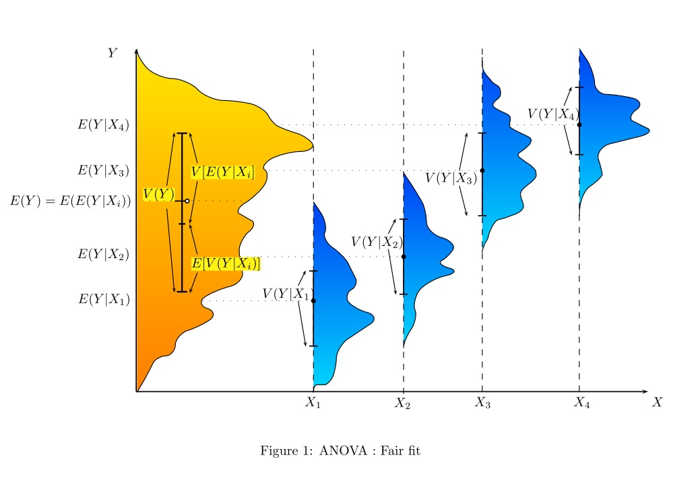
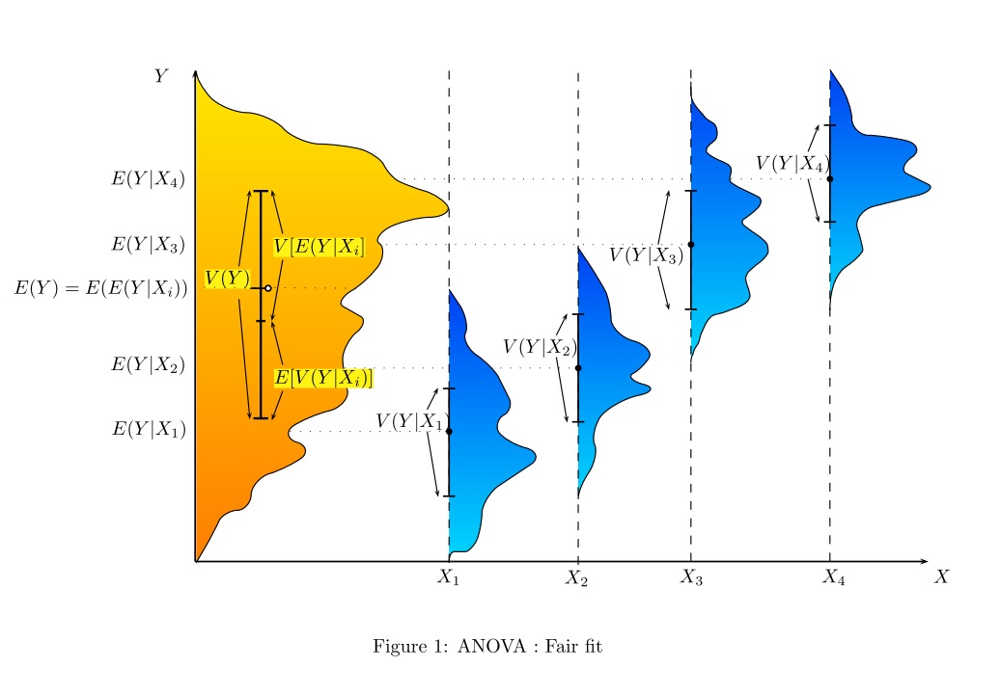

Normal test
Test for mean - known variance
For \(X = X_1, \dots, X_n \sim \N(\mu,\sigma)\), iid. \[\Null: \mu = \mu_0\] \[\frac{\overline X - \mu_0}{\sigma / \sqrt{n}} \sim \N(0,1)\]
If \(X = X_1, \dots, X_n \sim \text{Bernoulli}(p)\) then \[\overline X \sim \frac{1}{n}\text{Binom}(n,p) \approx \N(p, \sqrt{p(1-p)/n})\] and \[\Null: p = p_0\] \[\frac{\overline X - p_0}{\sqrt{p_0(1-p_0) / n}} \approx \N(0,1).\]
Student's t test
One sample
For \(X = X_1, \dots, X_n \sim \N(\mu,\sigma)\), iid. \[\Null: \mu = \mu_0\] \[\frac{\overline{X} - \mu_0}{S_X / \sqrt{n}} \sim t_{n-1}\]
Two independent samples (unpaired)
Common variance. For \(X = X_1, \dots, X_n \sim \N(\mu_X,\sigma)\), iid., \(Y = Y_1, \dots, Y_m \sim \N(\mu_Y,\sigma)\), iid. \[\Null: \mu_X - \mu_Y = w_0\] \[ \frac{\overline X - \overline Y - w_0}{S_p \sqrt{\frac{1}{n} + \frac{1}{m}}} \sim t_{n+m-2} \] where \[S_p = \sqrt{\frac{(n-1)S_X^2 + (m-2)S_Y^2}{n+m-2}}\] is the pooled standard deviation. \(S_p^2\) is an unbiased estimated for \(\sigma^2\).
Can be applied if \(0.5 < S_X / S_Y < 2\).
If \(m=n\) \[ \frac{\overline X - \overline Y - w_0}{S_p \sqrt{\frac{2}{n}}} \sim t_{2n-2}, \] \[S_p = \sqrt{\frac{S_X^2 + S_Y^2}{2}}.\]
Unequal variance - Welch test. For \(X = X_1, \dots, X_n \sim \N(\mu_X,\sigma_X)\), iid., \(Y = Y_1, \dots, Y_m \sim \N(\mu_Y,\sigma_Y)\), iid. \[\Null: \mu_X - \mu_Y = w_0\] \[ \frac{\overline X - \overline Y - w_0}{\overline S} \approx t_\nu, \quad \text{where} \quad \overline S = \sqrt{\frac{S_X^2}{n} + \frac{S_Y^2}{m}}, \] \[ \nu = \left(\frac{S_X^2}{n} + \frac{S_Y^2}{m}\right)^2 {\huge/} \left(\frac{(S_X^2/n)^2}{n-1} + \frac{(S_Y^2/m)^2}{m-1} \right) \] Recommended: \(m \approx n\), \(m,n > 30\).
Two dependent samples (paired)
For \(X = X_1, \dots, X_n\), iid., \(Y = Y_1, \dots, Y_n \), iid. Requirement: Differences \(D_i = X_i - Y_i\) are independent and (approximately) \(\overline D \sim \N(\mu_D,S_D/\sqrt{n}).\) \[\Null: \mu_X - \mu_Y = w_0\] \[\frac{\overline{D} - w_0}{S_D / \sqrt{n}} \sim t_{n-1}.\]
ANOVA
one-way ANOVA
Investigation of influence of one factor on random variable by considering the means. It is the generalisation of the two sample t test. \[\Null: \mu_1 = \mu_2 = \dots = \mu_k\]
Requirement: Factor levels have to be independent. Resiuduals must be zero-mean normal with same variance (also between groups).
It is assumed that the observations belonging to a group are the same (-noise) and that the variance is explained by the factor alone. \[y_{ij} = \mu_i + \epsilon_{ij} = \mu + \tau_i + \epsilon_{ij}, \quad i=1,\dots,k, \enspace j=1,\dots,n_i\] where \(\epsilon_{ij} \sim \N(0,\sigma)\) iid., \(\mu_i = \mu + \tau_i\) is the influence of the factor and \(n_1+\cdots+n_k=N.\)
We want to find point estimates of \(\mu, \mu_i\) and \(\tau_i\). Let \[\overline y_i = \frac{1}{n_i}\sum_{j=1}^{n_i} y_{ij}, \quad s_i^2 = \frac{1}{n_i-1}\sum_{j=1}^{n_i}(y_{ij}-\overline y_i)^2\] Then the sample man is \[\overline y = \frac{1}{N}\sum_{i=1}^k n_i \overline y_i.\] We take \(\hat \mu = \overline y\), \(\hat \mu_i = \overline y_i\) and \(\hat \tau_i = \hat \mu_i - \hat \mu.\) The residuals are \(\hat \epsilon_{ij} = y_{ij} - \overline y_i.\)
The decomposition of variance is given by \begin{align} \underbrace{\sum_{n=1}^N (y_{n} - \overline y)^2}_{\text{TSS}} = \underbrace{\sum_{n=1}^N (\hat y_{n} - \overline y)^2}_\text{RegSS} + \underbrace{\sum_{n=1}^N (y_n - \overline y)^2}_\text{RSS} \end{align} In our case \(\hat y_{ij} = \overline y_i\) and so \begin{align} \text{TSS} &= \sum_{i=1}^k\sum_{j=1}^{n_i} (y_{ij} - \overline y)^2 \\ \text{RegSS} &= \sum_{i=1}^k n_i (\overline y_i - \overline y)^2 = \sum_{i=1}^k n_i \hat \tau_i^2 \\ \text{RSS} &= \sum_{i=1}^k \sum_{j=1}^{n_i} \hat \epsilon_{ij}^2 = \sum_{i=1}^k\sum_{j=1}^{n_i} (y_{ij}-\overline y_i)^2 = \sum_{i=1}^k (n_i-1)s_i^2 \end{align}
Under the null we have \[ \text{RegSS} / \sigma^2 \sim \chi^2_{k-1}, \quad \text{RSS} / \sigma^2 \sim \chi^2_{N-k}.\] The test statistic is \begin{align} \frac{\text{between-group var}}{\text{within-group var}} = \frac{\text{explained var}}{\text{unexplained var}} = \frac{\text{RegSS} / (k-1)}{\text{RSS} / (N-k)} \end{align} which is F-distributed \(\sim F_{k-1,N-k}.\)
two-way ANOVA / MANOVA
The test can be extended to multiple factors but gets more complicated.
In general the groups should be balanced (same number of observations) and the assumption about normality should not be violated. F-tests are sensitive.
With the ANOVA it is tested whether the variance between groups is greater than withing groups. So we can decide if a classifaction is meaningful.
Example. Suppose we wanted to predict the weight of a dog based on a certain set of characteristics of each dog. One way to do that is to explain the distribution of weights by dividing the dog population into groups based on those characteristics. A successful grouping will split dogs such that (a) each group has a low variance of dog weights (meaning the group is relatively homogeneous) and (b) the mean of each group is distinct (if two groups have the same mean, then it isn't reasonable to conclude that the groups are, in fact, separate in any meaningful way).
 
